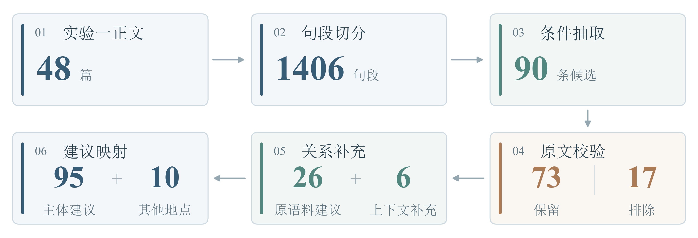
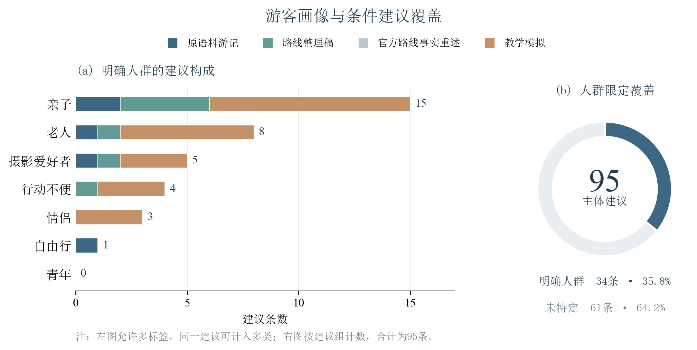
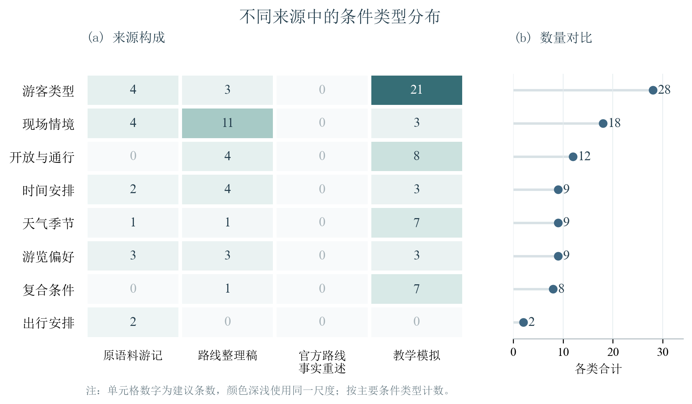
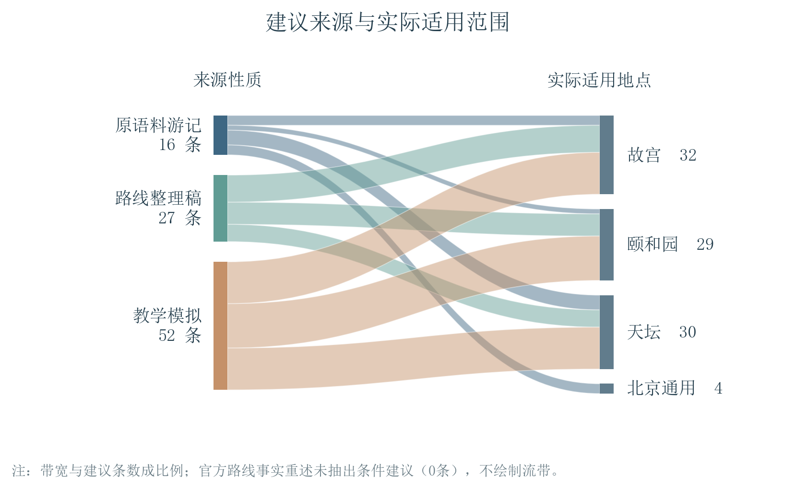

使用实验一提供的48篇结构化文章，整理得到95条主体建议和10条其他地点建议。最终映射表已完成人工复核。
来源筛选： CSV映射表

| 编号与人群 | 条件 | 建议 | 地点与来源 | 原文 |
|---|---|---|---|---|
| M001 未特定 | 只能选择一个博物馆可以去 合取或单一条件 | 那我一定选择故宫博物馆 | 故宫 原语料游记 | GG_T02 原句如果只能选择一家文化场所可以去，那我一定选择博物馆，如果只能选择一个博物馆可以去，那我一定选择故宫博物馆。 |
| M002 亲子 | 在皇家宫殿里遛娃 上下文情景 | 教育好熊孩子不要触碰到皇家文物 | 故宫 原语料游记 | GG_T02 原句在皇家宫殿里遛娃也是不错的选择，地方大环境好，不过教育好熊孩子不要触碰到皇家文物。 |
| M003 未特定 | 里面很大很容易迷路 上下文情景 | 最好提前规划好游玩攻略 | 故宫 原语料游记 | GG_T02 原句里面很大很容易迷路，最好提前规划好游玩攻略，不然时间都浪费在兜圈子上了。 |
| M004 老人 | 带着老人 上下文情景 | 不能现去找住宿的地方 | 北京通用 原语料游记 | TT_T03 原句去北京之前先订好住宿，一定要预定，尤其带着老人不能现去找住宿的地方。 |
| M005 未特定 | 有计划出行日程 合取或单一条件 | 就把住宿都预定好 | 北京通用 原语料游记 | TT_T03 原句如果有计划出行日程，就把住宿都预定好，不然现找和续住都很难。 |
| M006 未特定 | 去哪儿上预订房间 上下文情景 | 建议朋友们慎选 | 北京通用 原语料游记 | TT_T03 原句爸妈不喜欢吃外面的东西，又担心姥姥吃不惯坏了肠胃，开始定了间短租公寓，结果打电话给房主有没有电梯时，房主还告诉我说不提供厨房，而且最近在试水维修水温不行，我把房退掉，去哪儿上预订房间有几种区分，有的退房是免费，有的是限时免扣，还有的是预付房费不退的，建议朋友们慎选。 |
| M007 未特定 | 当天气温14度，阴天，如果不刮风 合取或单一条件 | 穿两件棉T加件风衣刚好 | 天坛 原语料游记 | TT_T03 原句当天气温14度，阴天，如果不刮风，穿两件棉T加件风衣刚好。 |
| M008 未特定 | 按顺序浏览 上下文情景 | 应该从南门进入 | 天坛 原语料游记 | TT_T03 原句到天坛的时间是下午三点多，路上不堵，为了不耽误游玩时间，我们在天坛北门下车，其实按顺序浏览应该从南门进入。 |
| M009 未特定 | 时间充足的话 合取或单一条件 | 在里边散步拍照 | 天坛 原语料游记 | TT_T03 原句由于我们的时间不够，天又要下小雨，我们只走了中线，看看中线两侧的风景也是很好的，时间充足的话，在里边散步拍照，相信会有意想不到的收获。 |
| M010 未特定 | 逛完天坛 上下文情景 | 出来直接吃晚饭刚好 | 天坛 原语料游记 | TT_T03 原句经验总结：天坛南进北出还有个好处，北门附近有很多好吃的，正宗豆汁首当其冲，还有附近的烤鸭店，逛完天坛出来直接吃晚饭刚好。 |
| M011 未特定 | 吃正宗的 合取或单一条件 | 就要吃当地人爱吃的地儿 | 北京通用 原语料游记 | TT_T03 原句说到吃，这个也是提前做过功课的，吃正宗的，就要吃当地人爱吃的地儿，但老字号历史悠久名气大，可以结合着吃，我是按可能游玩的景点附近找好吃的地方。 |
| M012 摄影爱好者 | 摄影爱好者 上下文情景 | 故宫城角是很多摄影爱好者必拍的 | 故宫 原语料游记 | TT_T03 原句听说故宫城角是很多摄影爱好者必拍的，从景山下来计划走的路本拍不到的，结果还是路过了，边走边拍了一张，当时天暗下来了，回来一看黑黑的，还好调出来还有色彩。 |
| M013 自由行 | 自由行的游客 合取或单一条件 | 通常可以选择这两个门进出 | 天坛 原语料游记 | TT_T01 原句西门和东门是有地铁站的，自由行的游客通常可以选择这两个门进出。 |
| M014 未特定 | 由于天坛公园很大 上下文情景 | 游玩的时候建议携带适当的饮用水和防晒的物品为宜 | 天坛 原语料游记 | TT_T02 原句形成内外坛，象征天圆地方.2，由于天坛公园很大，游玩的时候建议携带适当的饮用水和防晒的物品为宜。 |
| M015 亲子 | 如果和妈妈走散了 上下文情景 | 就要这样，在原地等妈妈，大声的喊妈妈，妈妈一定会来找你 | 颐和园 原语料游记 | YHY_T03 原句如果和妈妈走散了，你怎么办?"不好再等，我马上跑出来，抱起涵，"就要这样，在原地等妈妈，大声的喊妈妈，妈妈一定会来找你." |
| M016 未特定 | 转入展厅 合取或单一条件 | 需配戴口罩 | 颐和园 原语料游记 | YHY_T04 原句(转入展厅需配戴口罩) |
| M017 亲子、摄影爱好者 | 想拍照或带孩子观察建筑细节 析取条件 | 可以减少在入口附近停留的时间，把节奏留给中后段 | 故宫 路线整理稿 | GG_O01 原句同行者如果想拍照或带孩子观察建筑细节，可以减少在入口附近停留的时间，把节奏留给中后段;若遇临时封闭或明显拥挤，应服从现场引导，必要时删减停留点，而不是把“两小时”当作必须完成的限时任务。 |
| M018 未特定 | 遇临时封闭或明显拥挤 析取条件 | 应服从现场引导，必要时删减停留点，而不是把“两小时”当作必须完成的限时任务 | 故宫 路线整理稿 | GG_O01 原句同行者如果想拍照或带孩子观察建筑细节，可以减少在入口附近停留的时间，把节奏留给中后段;若遇临时封闭或明显拥挤，应服从现场引导，必要时删减停留点，而不是把“两小时”当作必须完成的限时任务。 |
| M019 未特定 | 希望在较短时间内兼顾建筑与展陈 合取或单一条件 | 可以参考北京旅游网的两小时推荐路线二 | 故宫 路线整理稿 | GG_O02 原句如果希望在较短时间内兼顾建筑与展陈，可以参考北京旅游网的两小时推荐路线二。 |
| M020 未特定 | 当天排队较多 合取或单一条件 | 可以压缩某一展厅的停留，而把整体方向保持下来 | 故宫 路线整理稿 | GG_O02 原句若当天排队较多，可以压缩某一展厅的停留，而把整体方向保持下来。 |
| M021 未特定 | 同行者兴趣不同 合取或单一条件 | 可预先约定参观结束后的会合地点，避免有人留在展厅、有人已经继续向北 | 故宫 路线整理稿 | GG_O03 原句若同行者兴趣不同，可预先约定参观结束后的会合地点，避免有人留在展厅、有人已经继续向北。 |
| M022 未特定 | 遇等候 合取或单一条件 | 可以酌情缩短停留，避免在行程起点耗去大部分时间 | 故宫 路线整理稿 | GG_O04 原句若遇等候，可以酌情缩短停留，避免在行程起点耗去大部分时间。 |
| M023 老人、亲子 | 带老人或孩子 析取条件 | 可以在院落间适当休息 | 故宫 路线整理稿 | GG_O04 原句带老人或孩子同行时，也可以在院落间适当休息。 |
| M024 未特定 | 展陈较多 上下文情景 | 建议按兴趣选出重点，其他部分以了解空间关系为主 | 故宫 路线整理稿 | GG_O04 原句由于展陈较多，实际停留容易超过半天，建议按兴趣选出重点，其他部分以了解空间关系为主。 |
| M025 未特定 | 临近结束仍有未看完的内容 合取或单一条件 | 可以留待再次参观，不必在最后一段仓促穿行 | 故宫 路线整理稿 | GG_O04 原句若临近结束仍有未看完的内容，可以留待再次参观，不必在最后一段仓促穿行。 |
| M026 未特定 | 有临时闭馆、天气变化或体力下降 析取条件 | 应及时减少支线，把休息和顺利离院纳入行程 | 故宫 路线整理稿 | GG_O05 原句若有临时闭馆、天气变化或体力下降，应及时减少支线，把休息和顺利离院纳入行程。 |
| M027 亲子 | 带孩子 合取或单一条件 | 在御花园增加休息，并减少珍宝馆的停留 | 故宫 教学模拟 | GG_S01 原句如果带孩子，则在御花园增加休息，并减少珍宝馆的停留;如果同行者是情侣，则可在不妨碍通行的地点安排拍照。 |
| M028 情侣 | 同行者是情侣 合取或单一条件 | 可在不妨碍通行的地点安排拍照 | 故宫 教学模拟 | GG_S01 原句如果带孩子，则在御花园增加休息，并减少珍宝馆的停留;如果同行者是情侣，则可在不妨碍通行的地点安排拍照。 |
| M029 老人 | 带老人 合取或单一条件 | 每连续步行二十分钟安排一次休息，并删减珍宝馆支线 | 故宫 教学模拟 | GG_S02 原句如果带老人，则每连续步行二十分钟安排一次休息，并删减珍宝馆支线。 |
| M030 老人 | 老人明确表示疲劳 合取或单一条件 | 优先离园，不再增加拍照任务 | 故宫 教学模拟 | GG_S02 原句若老人明确表示疲劳，就优先离园，不再增加拍照任务。 |
| M031 行动不便 | 同行者使用轮椅 合取或单一条件 | 应先核实无障碍通道;资料没有说明时，不能直接回答“全程无台阶 | 故宫 教学模拟 | GG_S02 原句假如同行者使用轮椅，应先核实无障碍通道;资料没有说明时，不能直接回答“全程无台阶”。 |
| M032 未特定 | 在通行与体力都允许时 只有……才…… | 执行整个计划 | 故宫 教学模拟 | GG_S03 原句最终出口预设为神武门，只有在通行与体力都允许时才执行整个计划。 |
| M033 未特定 | 下小雨且现场仍允许游览 合取或单一条件 | 减少露天停留，按现场指引选择可进入的避雨处 | 故宫 教学模拟 | GG_S03 原句如果下小雨且现场仍允许游览，则减少露天停留，按现场指引选择可进入的避雨处;如果出现雷雨或临时闭园，则停止户外行程并服从管理。 |
| M034 未特定 | 出现雷雨或临时闭园 析取条件 | 停止户外行程并服从管理 | 故宫 教学模拟 | GG_S03 原句如果下小雨且现场仍允许游览，则减少露天停留，按现场指引选择可进入的避雨处;如果出现雷雨或临时闭园，则停止户外行程并服从管理。 |
| M035 亲子 | 带孩子且孩子已经疲劳 合取或单一条件 | 建议先休息，并取消珍宝馆支线 | 故宫 教学模拟 | GG_S03 原句若带孩子且孩子已经疲劳，建议先休息，并取消珍宝馆支线;如果仅仅想拍照，可以在太和殿安排短暂停留。 |
| M036 摄影爱好者 | 仅仅想拍照 合取或单一条件 | 可以在太和殿安排短暂停留 | 故宫 教学模拟 | GG_S03 原句若带孩子且孩子已经疲劳，建议先休息，并取消珍宝馆支线;如果仅仅想拍照，可以在太和殿安排短暂停留。 |
| M037 未特定 | 珍宝馆当天未开放 合取或单一条件 | 取消该支线，沿现场开放通道继续参观;不要把旧攻略里的展陈名称当作已经确认的当日安排 | 故宫 教学模拟 | GG_S03 原句如果珍宝馆当天未开放，则取消该支线，沿现场开放通道继续参观;不要把旧攻略里的展陈名称当作已经确认的当日安排。 |
| M038 未特定 | 体力允许并且相关区域开放 只有……才…… | 加入下午支线 | 故宫 教学模拟 | GG_S03 原句只有体力允许并且相关区域开放，才加入下午支线。 |
| M039 未特定 | 天气与开放情况得到确认 除非……否则…… | 不承诺乘船、登高或进入特定院落 | 故宫 教学模拟 | GG_S03 原句除非天气与开放情况得到确认，否则不承诺乘船、登高或进入特定院落。 |
| M040 亲子 | 带孩子且已经疲劳 合取或单一条件 | 减少支线并安排休息 | 故宫 教学模拟 | GG_S04 原句若带孩子且已经疲劳，就减少支线并安排休息;我们这次也是先休息，再沿开放通道从神武门离开。 |
| M041 未特定 | 再次到访 合取或单一条件 | 可以提前选择一个重点，避免把全日清单当成亲子游必须完成的任务 | 故宫 教学模拟 | GG_S04 原句若再次到访，可以提前选择一个重点，避免把全日清单当成亲子游必须完成的任务。 |
| M042 未特定 | 只剩一小时 合取或单一条件 | 删减支线，并说明无法完成全日路线 | 故宫 教学模拟 | GG_S05 原句如果偏好摄影，则在不影响通行时多留一些构图时间;如果只剩一小时，则删减支线，并说明无法完成全日路线。 |
| M043 未特定 | 同行者需要休息 合取或单一条件 | 可放缓节奏，不必在入园后立即赶到每一个拍摄位置 | 天坛 路线整理稿 | TT_O02 原句若同行者需要休息，可放缓节奏，不必在入园后立即赶到每一个拍摄位置。 |
| M044 未特定 | 有接送或会合安排 析取条件 | 应明确约在南门 | 天坛 路线整理稿 | TT_O02 原句这条路线的终点与起点不同，同行者若有接送或会合安排，应明确约在南门。 |
| M045 未特定 | 想先认识天坛最主要的建筑关系 合取或单一条件 | 可以按南进北行的思路安排中轴线参观 | 天坛 路线整理稿 | TT_O04 原句如果想先认识天坛最主要的建筑关系，可以按南进北行的思路安排中轴线参观。 |
| M046 未特定 | 希望从东门离开 合取或单一条件 | 需要给离开中轴线后的步行留出时间 | 天坛 路线整理稿 | TT_O04 原句若希望从东门离开，需要给离开中轴线后的步行留出时间;若选择北门，也应提前与同行者约定，避免有人在不同园门等待。 |
| M047 未特定 | 选择北门 合取或单一条件 | 也应提前与同行者约定，避免有人在不同园门等待 | 天坛 路线整理稿 | TT_O04 原句若希望从东门离开，需要给离开中轴线后的步行留出时间;若选择北门，也应提前与同行者约定，避免有人在不同园门等待。 |
| M048 未特定 | 只想重点看祈年殿 合取或单一条件 | 可以在前段多停留，后续适当删减 | 天坛 路线整理稿 | TT_O05 原句同行者若只想重点看祈年殿，可以在前段多停留，后续适当删减。 |
| M049 未特定 | 遇院落关闭或体力不支 析取条件 | 应沿开放通道调整，不要把旧路线中的所有名称当作必须完成的清单 | 天坛 路线整理稿 | TT_O05 原句若遇院落关闭或体力不支，应沿开放通道调整，不要把旧路线中的所有名称当作必须完成的清单。 |
| M050 亲子 | 带孩子 合取或单一条件 | 在长廊增加休息，并减少斋宫的停留 | 天坛 教学模拟 | TT_S01 原句如果带孩子，则在长廊增加休息，并减少斋宫的停留;如果同行者是情侣，则可在不妨碍通行的地点安排拍照。 |
| M051 情侣 | 同行者是情侣 合取或单一条件 | 可在不妨碍通行的地点安排拍照 | 天坛 教学模拟 | TT_S01 原句如果带孩子，则在长廊增加休息，并减少斋宫的停留;如果同行者是情侣，则可在不妨碍通行的地点安排拍照。 |
| M052 老人 | 带老人 合取或单一条件 | 每连续步行二十分钟安排一次休息，并删减斋宫支线 | 天坛 教学模拟 | TT_S02 原句如果带老人，则每连续步行二十分钟安排一次休息，并删减斋宫支线。 |
| M053 老人 | 老人明确表示疲劳 合取或单一条件 | 优先离园，不再增加拍照任务 | 天坛 教学模拟 | TT_S02 原句若老人明确表示疲劳，就优先离园，不再增加拍照任务。 |
| M054 行动不便 | 同行者使用轮椅 合取或单一条件 | 应先核实无障碍通道;资料没有说明时，不能直接回答“全程无台阶 | 天坛 教学模拟 | TT_S02 原句假如同行者使用轮椅，应先核实无障碍通道;资料没有说明时，不能直接回答“全程无台阶”。 |
| M055 未特定 | 在通行与体力都允许时 只有……才…… | 执行整个计划 | 天坛 教学模拟 | TT_S03 原句最终出口预设为东门，只有在通行与体力都允许时才执行整个计划。 |
| M056 未特定 | 下小雨且现场仍允许游览 合取或单一条件 | 减少露天停留，按现场指引选择可进入的避雨处 | 天坛 教学模拟 | TT_S03 原句如果下小雨且现场仍允许游览，则减少露天停留，按现场指引选择可进入的避雨处;如果出现雷雨或临时闭园，则停止户外行程并服从管理。 |
| M057 未特定 | 出现雷雨或临时闭园 析取条件 | 停止户外行程并服从管理 | 天坛 教学模拟 | TT_S03 原句如果下小雨且现场仍允许游览，则减少露天停留，按现场指引选择可进入的避雨处;如果出现雷雨或临时闭园，则停止户外行程并服从管理。 |
| M058 亲子 | 带孩子且孩子已经疲劳 合取或单一条件 | 建议先休息，并取消斋宫支线 | 天坛 教学模拟 | TT_S03 原句若带孩子且孩子已经疲劳，建议先休息，并取消斋宫支线;如果仅仅想拍照，可以在圜丘安排短暂停留。 |
| M059 摄影爱好者 | 仅仅想拍照 合取或单一条件 | 可以在圜丘安排短暂停留 | 天坛 教学模拟 | TT_S03 原句若带孩子且孩子已经疲劳，建议先休息，并取消斋宫支线;如果仅仅想拍照，可以在圜丘安排短暂停留。 |
| M060 未特定 | 斋宫当天未开放 合取或单一条件 | 取消该支线，保留祈年殿与长廊的参观;不能仅凭较旧的资料确认所有院落均已开放 | 天坛 教学模拟 | TT_S03 原句如果斋宫当天未开放，则取消该支线，保留祈年殿与长廊的参观;不能仅凭较旧的资料确认所有院落均已开放。 |
| M061 未特定 | 体力允许并且相关区域开放 只有……才…… | 加入下午支线 | 天坛 教学模拟 | TT_S03 原句只有体力允许并且相关区域开放，才加入下午支线。 |
| M062 未特定 | 天气与开放情况得到确认 除非……否则…… | 不承诺乘船、登高或进入特定院落 | 天坛 教学模拟 | TT_S03 原句除非天气与开放情况得到确认，否则不承诺乘船、登高或进入特定院落。 |
| M063 亲子 | 带孩子且已经疲劳 合取或单一条件 | 减少支线并安排休息 | 天坛 教学模拟 | TT_S04 原句若带孩子且已经疲劳，就减少支线并安排休息;我们这次也是先休息，再沿开放通道从东门离开。 |
| M064 未特定 | 再次到访 合取或单一条件 | 可以提前选择一个重点，避免把全日清单当成亲子游必须完成的任务 | 天坛 教学模拟 | TT_S04 原句若再次到访，可以提前选择一个重点，避免把全日清单当成亲子游必须完成的任务。 |
| M065 未特定 | 只剩一小时 合取或单一条件 | 删减支线，并说明无法完成全日路线 | 天坛 教学模拟 | TT_S05 原句如果偏好摄影，则在不影响通行时多留一些构图时间;如果只剩一小时，则删减支线，并说明无法完成全日路线。 |
| M066 未特定 | 当天游船停航或等候过久 析取条件 | 应按园内导览调整后段安排，先保证路线可达，再决定是否继续去南湖岛 | 颐和园 路线整理稿 | YHY_O02 原句若当天游船停航或等候过久，应按园内导览调整后段安排，先保证路线可达，再决定是否继续去南湖岛。 |
| M067 未特定 | 时间有限 上下文情景 | 可以把颐和园行程安排在东部院落、长廊和后山之间 | 颐和园 路线整理稿 | YHY_O03 原句时间有限时，可以把颐和园行程安排在东部院落、长廊和后山之间。 |
| M068 未特定 | 计划严格控制时长 合取或单一条件 | 不宜在所有院落中逐一深入 | 颐和园 路线整理稿 | YHY_O03 原句若计划严格控制时长，就不宜在所有院落中逐一深入。 |
| M069 行动不便 | 不适合上下坡或台阶 析取条件 | 应在行前了解园内导览，必要时调整路线 | 颐和园 路线整理稿 | YHY_O03 原句同行者若不适合上下坡或台阶，应在行前了解园内导览，必要时调整路线。 |
| M070 未特定 | 停航或等候较久 析取条件 | 需要重新评估步行安排，不能忽略从船程变为步行后的距离变化 | 颐和园 路线整理稿 | YHY_O04 原句若停航或等候较久，需要重新评估步行安排，不能忽略从船程变为步行后的距离变化。 |
| M071 未特定 | 前山停留已占用较长时间 合取或单一条件 | 可以减少后段院落的深入参观，把路线作为一个可调整的框架 | 颐和园 路线整理稿 | YHY_O04 原句如果前山停留已占用较长时间，可以减少后段院落的深入参观，把路线作为一个可调整的框架。 |
| M072 亲子 | 带孩子 上下文情景 | 不要在桥边长时间分散 | 颐和园 路线整理稿 | YHY_O05 原句拍照时应照顾正常通行，带孩子的同行者也应注意不要在桥边长时间分散。 |
| M073 未特定 | 当天不乘船 合取或单一条件 | 需要按园内导览重新评估步行距离，不要把标注的三小时直接套用在变更后的行程上 | 颐和园 路线整理稿 | YHY_O05 原句若当天不乘船，则需要按园内导览重新评估步行距离，不要把标注的三小时直接套用在变更后的行程上。 |
| M074 亲子 | 带孩子 合取或单一条件 | 在苏州街增加休息，并减少佛香阁的停留 | 颐和园 教学模拟 | YHY_S01 原句如果带孩子，则在苏州街增加休息，并减少佛香阁的停留;如果同行者是情侣，则可在不妨碍通行的地点安排拍照。 |
| M075 情侣 | 同行者是情侣 合取或单一条件 | 可在不妨碍通行的地点安排拍照 | 颐和园 教学模拟 | YHY_S01 原句如果带孩子，则在苏州街增加休息，并减少佛香阁的停留;如果同行者是情侣，则可在不妨碍通行的地点安排拍照。 |
| M076 老人 | 带老人 合取或单一条件 | 每连续步行二十分钟安排一次休息，并删减佛香阁支线 | 颐和园 教学模拟 | YHY_S02 原句如果带老人，则每连续步行二十分钟安排一次休息，并删减佛香阁支线。 |
| M077 老人 | 老人明确表示疲劳 合取或单一条件 | 优先离园，不再增加拍照任务 | 颐和园 教学模拟 | YHY_S02 原句若老人明确表示疲劳，就优先离园，不再增加拍照任务。 |
| M078 行动不便 | 同行者使用轮椅 合取或单一条件 | 应先核实无障碍通道;资料没有说明时，不能直接回答“全程无台阶 | 颐和园 教学模拟 | YHY_S02 原句假如同行者使用轮椅，应先核实无障碍通道;资料没有说明时，不能直接回答“全程无台阶”。 |
| M079 未特定 | 在通行与体力都允许时 只有……才…… | 执行整个计划 | 颐和园 教学模拟 | YHY_S03 原句最终出口预设为北宫门，只有在通行与体力都允许时才执行整个计划。 |
| M080 未特定 | 下小雨且现场仍允许游览 合取或单一条件 | 减少露天停留，按现场指引选择可进入的避雨处 | 颐和园 教学模拟 | YHY_S03 原句如果下小雨且现场仍允许游览，则减少露天停留，按现场指引选择可进入的避雨处;如果出现雷雨或临时闭园，则停止户外行程并服从管理。 |
| M081 未特定 | 出现雷雨或临时闭园 析取条件 | 停止户外行程并服从管理 | 颐和园 教学模拟 | YHY_S03 原句如果下小雨且现场仍允许游览，则减少露天停留，按现场指引选择可进入的避雨处;如果出现雷雨或临时闭园，则停止户外行程并服从管理。 |
| M082 亲子 | 带孩子且孩子已经疲劳 合取或单一条件 | 建议先休息，并取消佛香阁支线 | 颐和园 教学模拟 | YHY_S03 原句若带孩子且孩子已经疲劳，建议先休息，并取消佛香阁支线;如果仅仅想拍照，可以在仁寿殿安排短暂停留。 |
| M083 摄影爱好者 | 仅仅想拍照 合取或单一条件 | 可以在仁寿殿安排短暂停留 | 颐和园 教学模拟 | YHY_S03 原句若带孩子且孩子已经疲劳，建议先休息，并取消佛香阁支线;如果仅仅想拍照，可以在仁寿殿安排短暂停留。 |
| M084 未特定 | 游船因大风停航 合取或单一条件 | 取消乘船并改为沿开放岸线步行;即使买好了行程计划，也不能把停航写成可乘船 | 颐和园 教学模拟 | YHY_S03 原句如果游船因大风停航，则取消乘船并改为沿开放岸线步行;即使买好了行程计划，也不能把停航写成可乘船。 |
| M085 未特定 | 体力允许并且相关区域开放 只有……才…… | 加入下午支线 | 颐和园 教学模拟 | YHY_S03 原句只有体力允许并且相关区域开放，才加入下午支线。 |
| M086 未特定 | 天气与开放情况得到确认 除非……否则…… | 不承诺乘船、登高或进入特定院落 | 颐和园 教学模拟 | YHY_S03 原句除非天气与开放情况得到确认，否则不承诺乘船、登高或进入特定院落。 |
| M087 亲子 | 带孩子且已经疲劳 合取或单一条件 | 减少支线并安排休息 | 颐和园 教学模拟 | YHY_S04 原句若带孩子且已经疲劳，就减少支线并安排休息;我们这次也是先休息，再沿开放通道从北宫门离开。 |
| M088 未特定 | 再次到访 合取或单一条件 | 可以提前选择一个重点，避免把全日清单当成亲子游必须完成的任务 | 颐和园 教学模拟 | YHY_S04 原句若再次到访，可以提前选择一个重点，避免把全日清单当成亲子游必须完成的任务。 |
| M089 未特定 | 只剩一小时 合取或单一条件 | 删减支线，并说明无法完成全日路线 | 颐和园 教学模拟 | YHY_S05 原句如果偏好摄影，则在不影响通行时多留一些构图时间;如果只剩一小时，则删减支线，并说明无法完成全日路线。 |
| M090 未特定 | 只有三十分钟，却希望完整参观所有展区 合取或单一条件 | 应缩减目标或延长时间，而不是把所有停留压缩到几分钟 | 故宫 教学模拟 | GG_S02 原句如果只有三十分钟，却希望完整参观所有展区，那么这两个约束冲突;应缩减目标或延长时间，而不是把所有停留压缩到几分钟。 |
| M091 未特定 | 只有三十分钟，却希望完整参观所有展区 合取或单一条件 | 应缩减目标或延长时间，而不是把所有停留压缩到几分钟 | 颐和园 教学模拟 | YHY_S02 原句如果只有三十分钟，却希望完整参观所有展区，那么这两个约束冲突;应缩减目标或延长时间，而不是把所有停留压缩到几分钟。 |
| M092 未特定 | 只有三十分钟，却希望完整参观所有展区 合取或单一条件 | 应缩减目标或延长时间，而不是把所有停留压缩到几分钟 | 天坛 教学模拟 | TT_S02 原句如果只有三十分钟，却希望完整参观所有展区，那么这两个约束冲突;应缩减目标或延长时间，而不是把所有停留压缩到几分钟。 |
| M093 未特定 | 第一次参观故宫，又只有两小时左右 合取或单一条件 | 可以先把注意力放在中轴线 | 故宫 路线整理稿 | GG_O01 原句第一次参观故宫，又只有两小时左右，可以先把注意力放在中轴线。 |
| M094 亲子 | 带孩子同行时 上下文情景 | 候船、上下船和过桥都应由家长照看 | 颐和园 路线整理稿 | YHY_O02 原句带孩子同行时，候船、上下船和过桥都应由家长照看。 |
| M095 未特定 | 坚持既要乘船又不接受候船 合取或单一条件 | 在无法确认班次时应说明信息不足 | 颐和园 教学模拟 | YHY_S03 原句若坚持既要乘船又不接受候船，在无法确认班次时应说明信息不足。 |



| 编号与人群 | 条件 | 建议 | 地点与来源 | 原文 |
|---|---|---|---|---|
| X001 未特定 | 喜欢骑车转胡同之类的朋友 合取或单一条件 | 可以租自行车 | 北京胡同 原语料游记 | TT_T03 原句建议喜欢骑车转胡同之类的朋友，可以租自行车，我在观音寺街看到两家租车店。 |
| X002 摄影爱好者 | 喜欢拍照的朋友 上下文情景 | 早点到这拍照，自拍都可以呢 | 前门大街 原语料游记 | TT_T03 原句清晨的前门大街很肃静，冷调，喜欢拍照的朋友早点到这拍照，自拍都可以呢。 |
| X003 青年 | 是年轻人 合取或单一条件 | 可以去长城(因为那句话嘛~ | 长城 原语料游记 | TT_T03 原句如果是年轻人，可以去长城(因为那句话嘛~)，喜欢拍照的年轻人还可以去五道口和798.喜欢故居的有宋庆龄，郭沫若，纪晓岚还有恭王府，在网上可以查一下更多。 |
| X004 青年 | 喜欢拍照的年轻人 合取或单一条件 | 还可以去五道口和798 | 五道口和798 原语料游记 | TT_T03 原句如果是年轻人，可以去长城(因为那句话嘛~)，喜欢拍照的年轻人还可以去五道口和798.喜欢故居的有宋庆龄，郭沫若，纪晓岚还有恭王府，在网上可以查一下更多。 |
| X005 未特定 | 要听的话 合取或单一条件 | 要提前定啊 | 德云社 原语料游记 | TT_T03 原句德云社在这里也有一处广德楼，据说天坛附近的德云社听起来更有意思，在网上团票了也要电话预约座位，所以要听的话要提前定啊，开场时间晚七点，至少进行两小时。 |
| X006 未特定 | 要欣赏正阳门及箭楼 合取或单一条件 | 全北京最好的位置可能是前门 M 餐厅 (Capital M)，靠窗的餐台要提早预订，不妨抽空去吃一份 high tea，一边叹杯咖啡，一边欣赏正阳门箭楼雄宏的景致，不要错过 Capital M 的露天餐区，那里本身已经环境上佳，加上正阳门做衬托，相信晚间日落时份更加迷人 | 正阳门箭楼/前门Capital M餐厅（北京） 原语料游记 | TT_T05 原句要欣赏正阳门及箭楼，全北京最好的位置可能是前门 M 餐厅 (Capital M)，靠窗的餐台要提早预订，不妨抽空去吃一份 high tea，一边叹杯咖啡，一边欣赏正阳门箭楼雄宏的景致，不要错过 Capital M 的露天餐区，那里本身已经环境上佳，加上正阳门做衬托，相信晚间日落时份更加迷人。 |
| X007 未特定 | 如果不想去人山人海的北京传统景点 合取或单一条件 | 可以考虑到这里逛半天 | 798艺术区（北京） 原语料游记 | TT_T05 原句如果不想去人山人海的北京传统景点，可以考虑到这里逛半天。 |
| X008 未特定 | 往北京国家博物馆参观 上下文情景 | 要出示身份证件(或回乡证)换领入场卷 | 中国国家博物馆（北京） 原语料游记 | TT_T05 原句路过天安门，原本往北京国家博物馆参观，去到才知道博物馆是免费进场，但是要出示身份证件(或回乡证)换领入场卷，由于当日出门无带回乡证，摸著门钉失望离开。 |
| X009 未特定 | 走到瀚林院遗址旁 上下文情景 | 不开放予游客参观，连在外边拍摄也被禁止 | 瀚林院遗址（北京） 原语料游记 | TT_T05 原句不过走到瀚林院遗址旁，才发现建筑物被纳入北京公安部的范围内，不开放予游客参观，连在外边拍摄也被禁止。 |
| X010 未特定 | 有空 合取或单一条件 | 到雍和宫一游，至少能够感受一下雍和宫的灵气 | 雍和宫（北京） 原语料游记 | TT_T05 原句有空到雍和宫一游，至少能够感受一下雍和宫的灵气。 |